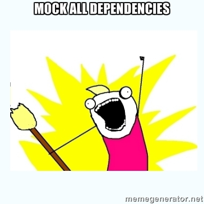

Testing using Mocks
Session 4

Remember the SOLID principles?
- Make your code testable
Testable code

Testability
Degree to which a system or component facilitates the establishment of a test criteria and the performance of tests to determine whether those criteria have been met.
(IEEE 610.12)
To achieve testability you need:
- Controllability: control the inputs
- Observability: check the outputs
In reality:
- a component is depends on another system
- Controllability is difficult!
The curse of dependencies:
- hard to observe
- difficult to setup
- slow
- tighten to the UI
- not existing
Remember what is not unit-testing?
Test doubles
Test doubles stand in for the real thing
- Stubs: Simplest implementation of an interface. For example, Stub's method typically return hardcoded values. Astub looks like a duck.
- Fakes: More sofiticated than stubs. Fake looks like a duck, walks like a duck even though it is not a duck.
- Mocks:
Introducing mock objects
- Fake the implementation of objects that are hard to control, so you can observe them
- Incorporate assertions for verifying expected collaboration.
Mock object
- Check method calls
- Check arguments
- Test interaction with your system
Example
- Sensor is a hardware for temperature sensing
- It sends data to Logger
- Testing Logger is cumbersome
Mock out Sensor with an object that behaves like it!
Mock lifecycle
- Create
- Set expectations
- Put in ready state
- Verify expectation
How many mocks?
- One concrete class, mock the rest
- Law of Demeter aka “Only talk to your friends”
Demo
Let’s implement a Stocks portfolio
- You can add stocks to your portfolio
- You can ask for the total value of your portfolio
- The value of your stocks is given by a market
- The market service is an external dependence
- Let’s mock the market service